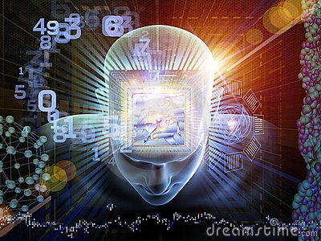

By: AcuarianWolf01

In this page you´ll find the project of a secondary studient. I really don´t know why a project based practically in a "Netflix" serie but the only think I can (and have) to do is to make my project until I want to fail the year. So well... Besides you´ll see the project, you´ll find a phillosophical way to interpret the Black Mirror´s chapter: Play test and an adolescent´s point of view about technology, how we control the technology and it´s advances (or how it control us). Well... Let´s begin.
An opnion...? Yes. A belief...? I really don´t think so. A knowledge about it´s limits? I think that it´s something that when you buy something technological it have to be impressed in big "Caution: this have it´s limits please read´em", because i really think that it´s cool that the big technology companies want to sell it´s products, it´s really cool, but isn´t cool that sell it without inform us, well... I think that, as the antigue tyrants, that thought that the ignorance of their people won´t make that reveal in the face of their dictatorship. The Big Technology Companies (as Samsung, Hawuei, Sony, Motorola, etc) don´t inform us because they fear that, if we know more about the bad things that could happen if we don´t use good our cellphones or appliances. So I think that if someone wants to buy a cellphone, tablet, or whatever technological thing to his/her children, they have to inform them and teach them how to use a cellphone, because the child could use that in a wrong way and end up in a problem.
I think That technology such it improves our knowledge inhibits it. Technology is a two phylum weapon, it can help us as can harm us. It can improves our knowledge by the way that we can learn new things, like a new language, easely and without having to go a expensive course. But if can inhibit it by the way that if the technology is used in a bad way, it can´t help us to be better and can make us fall in bad desicions and make us know, but know bad things that won´t benefit us, that would harm us and the ones we love. So I don´t think that it can completely improve our knowledge or inhibit it. I don´t see myself in position to think that technology only makes us more backward or wiser, because it does the two (well the only and unique way that it only makes one, to damge us or to help us, is by the way youuse tchnology, for good things or for bad things).
Well, I think that technology controled the mind of the main character, first, he was always in his cellphone, even if he was in an airplane with a screen lit with a film, and later when he met a woman, he searched a work with an app in his cellphone, and chose one of video games, and (i don´t like to make spoiler to no one, so sorry if that is the case) and the end he dies because the prototype, that was being test with him, finish killing him, so thats the reason that I chose that symbol to represent the chapter of Black Mirror: Play test.